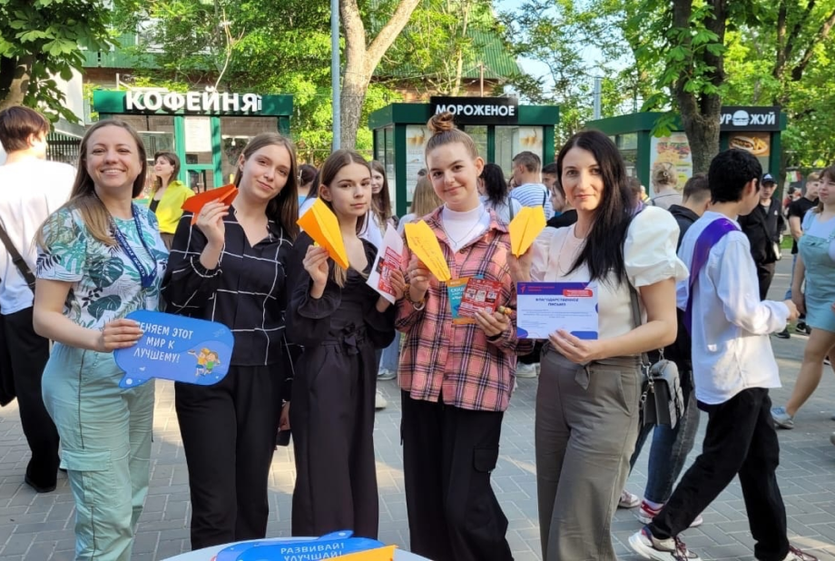
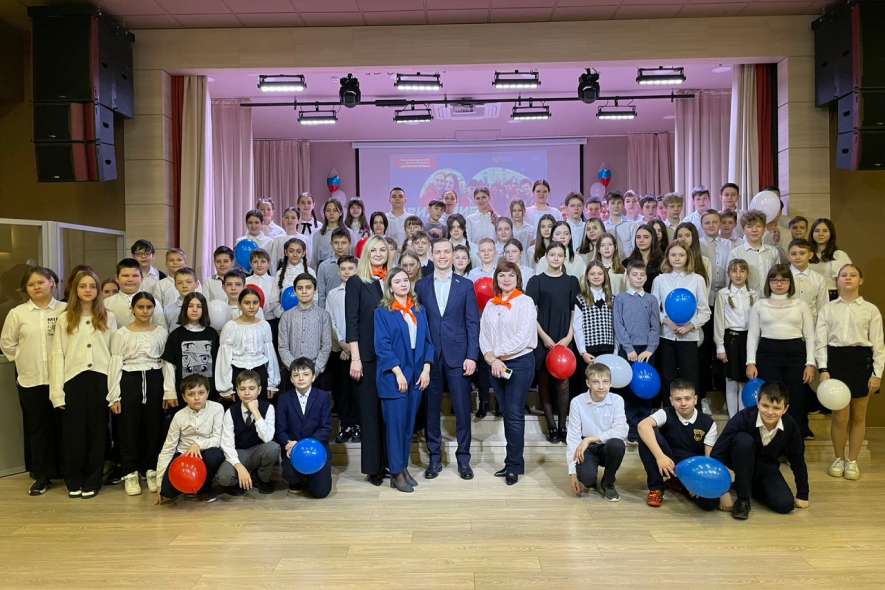

Участие в молодежной акции "Моя альтернатива"

23 мая члены школьного отделения РДДМ приняли участие в молодежной акции "Моя альтернатива". Ребята участвовали в интереснейших мастер-классах, посетили интерактивные площадки, помогающие определиться с профессией, прошли веревочный трек и даже поиграли в гигантскую дженгу!. Было круто, весело и полезно!
#школа38Шахты#молодёжьШахты#образованиеШахты#лето2023#Дружба38#РДДМ#ДвижениеПервых#навигаторыдетства61#РДДМ61#СоздаемДвижение#ДвижениеПервых61
МЫ В ДВИЖЕНИИ!

20.02.23 в нашей школе состоялась торжественное открытие первичного отделения Российского движения детей и молодежи «Движение первых»!Поздравить ребят с таким радостным и важным событием приехали:
- - Депутат городской Думы города Шахты Горцевской Аркадий Андреевич
- - Муниципальный координатор проекта "Навигаторы детства" Агалакова Ирина Владимировна
- ! Быть с Россией,
- ! Быть человеком,
- ! Быть вместе,
- ! Быть в Движении,
- ! Быть Первыми!
#школа38Шахты#молодёжьШахты#образованиеШахты#лето2023#Дружба38#РДДМ#ДвижениеПервых#навигаторыдетства61#РДДМ61#СоздаемДвижение#ДвижениеПервых61